Viewer Gallery
Every view is the same Three.js engineering client over the one authoritative VoxelWorld — no private scene graphs, no second engine. Each milestone added worlds and render modes; this page collects the blocky renderings as they evolved.
V26, Integrated World Kernel
One observation → transactional commit → semantics → identity → reasoning → snapshot. Milestone report →
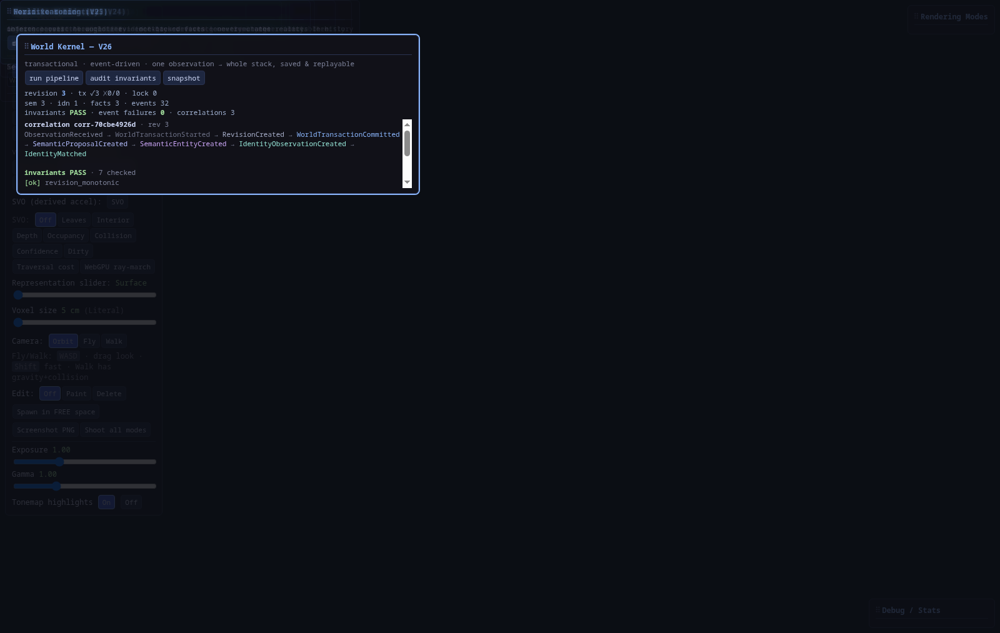
V25, World Reasoning
Evidence-backed inference — causal chains, competing hypotheses, explanations. Caps the layered stack. Milestone report →
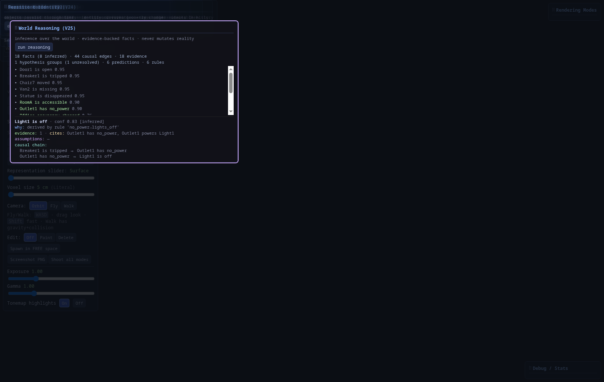
V24, Persistent Identity
Objects survive across observations — lifecycle, immutable history, change timeline. Milestone report →

V23, Semantic World Engine
Meaning decoupled from geometry — evidence, competing hypotheses, relationships, highlight. Milestone report →

V22, Neural Backends
Interchangeable AI optimizers for Gaussian evolution — RealESRGAN on CUDA. Milestone report →

V21, Reactive Runtime
Subsystems react to RuntimeEvents — no orchestration. Milestone report →

V20, Reality Capture
Unified observation intake through Registration + Evidence. Milestone report →

V19, Gaussian Evolution
Async splat-data optimization — cached revisions, world untouched. Complements V18 pixel enhancement. Milestone report →

V18, Gaussian Enhancement
Packet-only enhancement of the Gaussian render — metadata-conditioned, world untouched. Milestone report →


/api/genh/image?profile=medium — tan hallway from the CPU raster + classical-CV chain.
V17, Simulation
World alive over time — behaviors, triggers, tick/time controls; compiler auto-responds to changes. Milestone report →

V16, Visualization Engine
17 artifact-consuming renderers; hot-switch never recompiles; world untouched. Milestone report →

V15, World Compiler
Unified compiler runtime diagnostics — five plugins, artifact store, cache, transactions. Milestone report →

V14, Registration / Mapping
Global pose-graph diagnostics over the authoritative world — nodes, edges, loops, chi², quality, drift. Milestone report →

V12, Gaussian Splat Scene
Chunked persistent Gaussian scene derived from voxels + evidence — elliptical splat renderer, not point sprites. Milestone report →

gaussian_scene: 268.V11, Runtime Inspector
The world runtime made visible: evidence stats, dirty state, scheduler, confidence histogram, and the streaming event feed. Milestone report →

V10, World OS Panel
The viewer as a world operating system: drag-and-drop ingest, component queries, live world stats, full provenance. Milestone report →

Sparse Voxel Octree
The derived acceleration structure over the authoritative world: 99 121 nodes at depth 8, exact occupancy, click-to-inspect metadata. Milestone report →


v9, Error-Driven Voxels
Every voxel bounded by a measurable error budget; appearance carried by texture patches, independent of geometry. The 4-way comparison: Geometry only · Avg color · Appearance layer · Polycam mesh. Milestone report →


v8, Feature Voxels
Adaptive voxelization by measured curvature: 24 cm blocks on flat walls, 3 cm at edges and trim — 13.6× fewer voxels, fidelity measured. Milestone report →


The Polycam Scan, Standalone
The LiDAR-metric Polycam capture served directly: extracted surface (30 974 verts, 8K texture) and 73 768 literal voxels at the true 12.3 m scale. Milestone report →


v7, Multi-Source Fusion
Monocular video and the Polycam scan fused into one world. The source mode was added here: per-voxel provenance made visible. Milestone report →


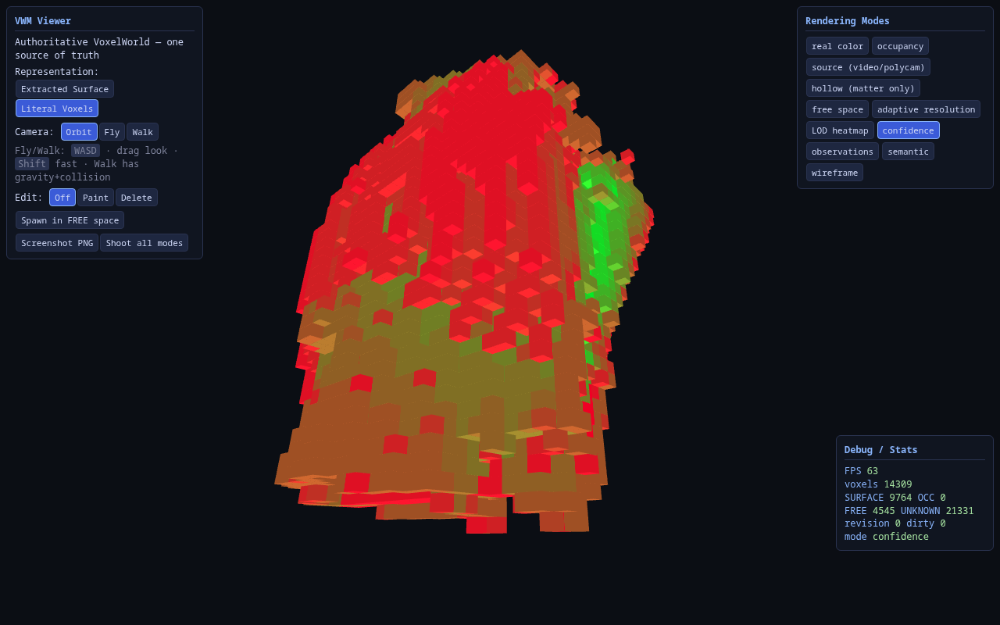
v5, Representation ≠ Storage
The surface/voxel toggle was added here: two derived views of the same authoritative TSDF field. Milestone report →
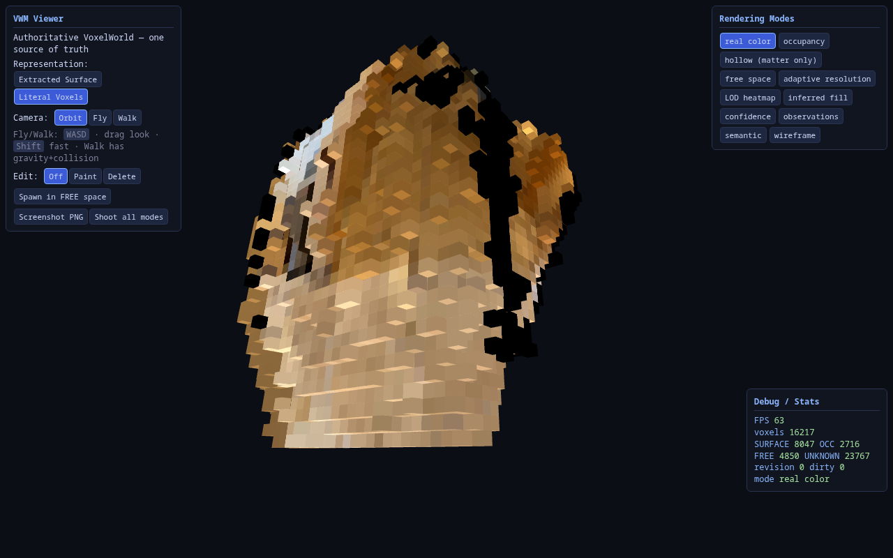
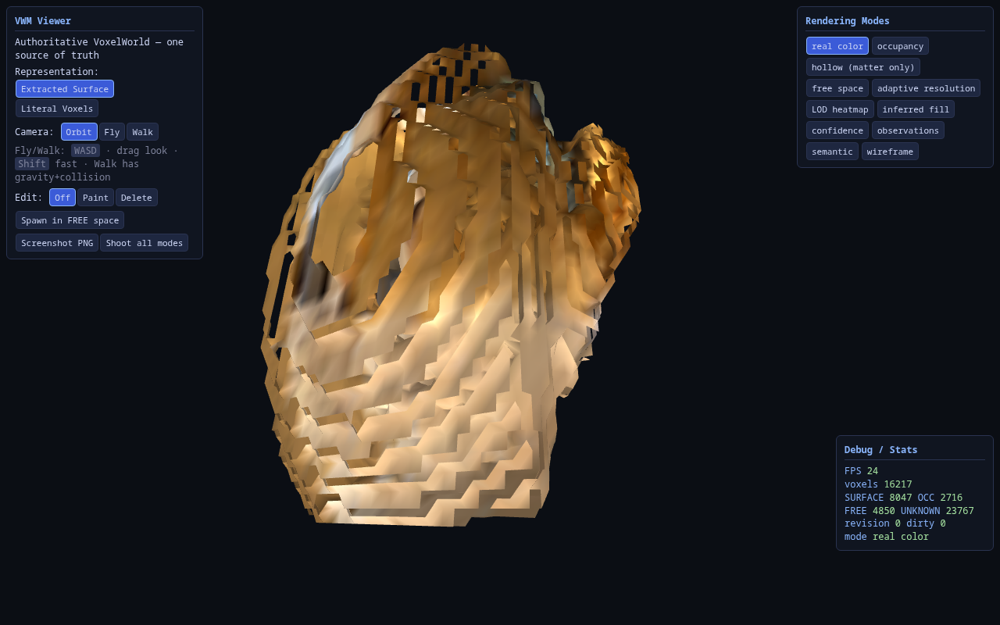

v4, Recognizable Adaptive Reconstruction
Hole-filling (all fills provenance-tagged INFERRED) and adaptive detail levels, each with its own render mode. Milestone report →
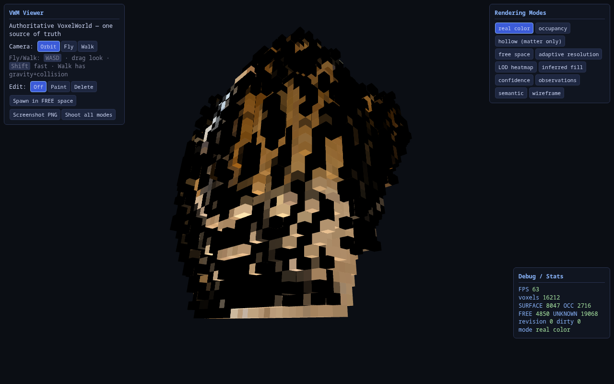
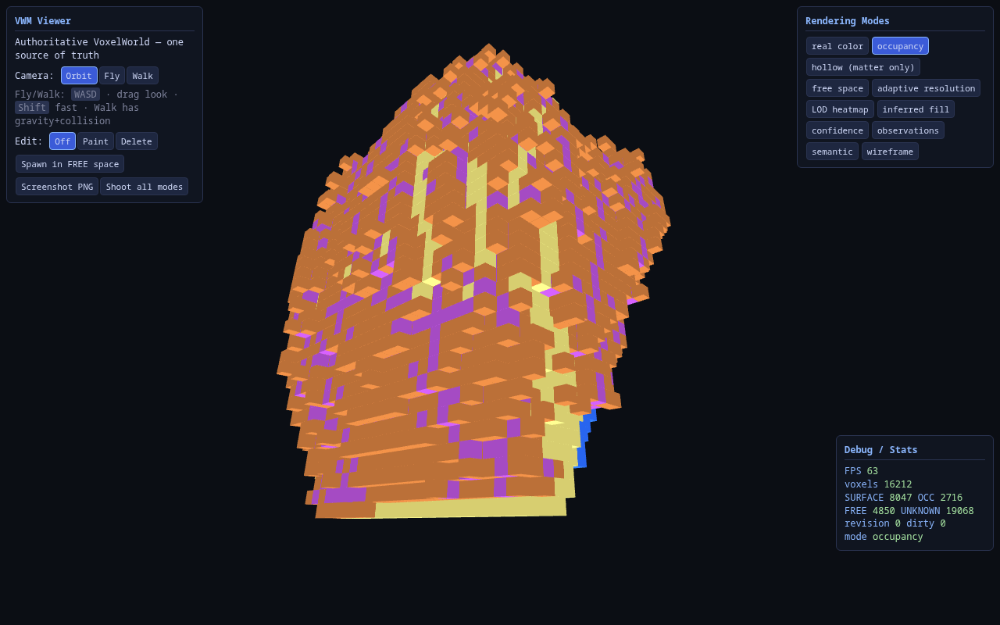
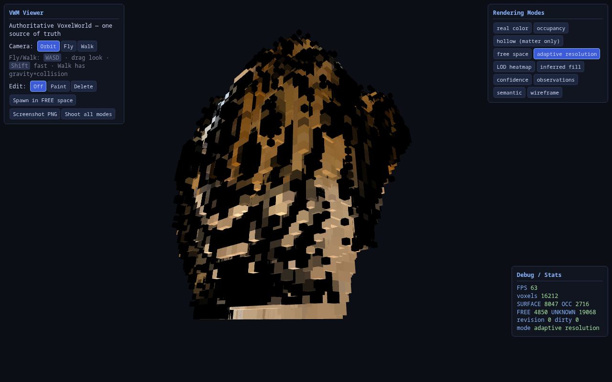


v3, The First Viewer
The original eight render modes on the hollow world, captured the day the Three.js client shipped. Milestone report →
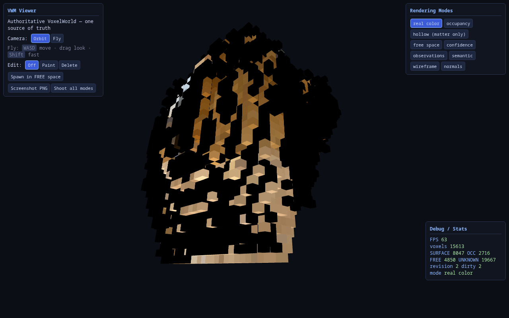
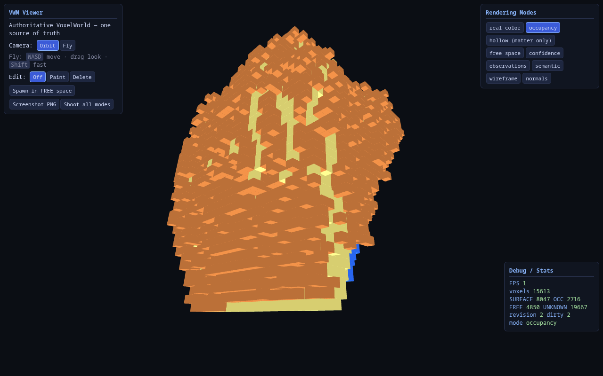
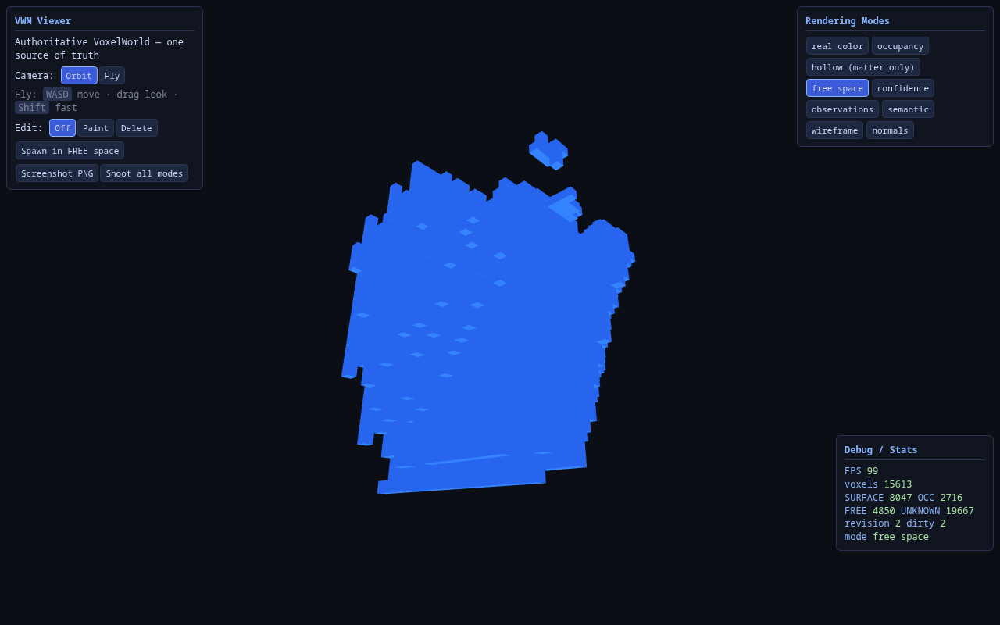
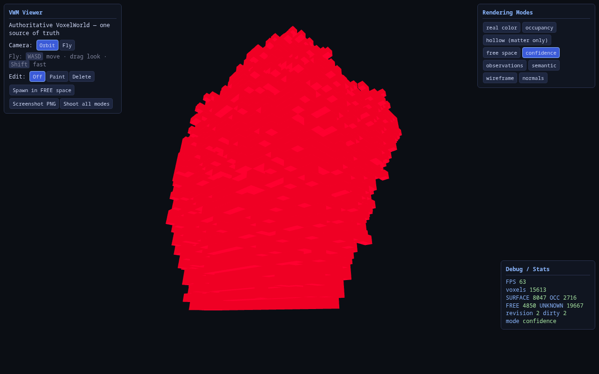
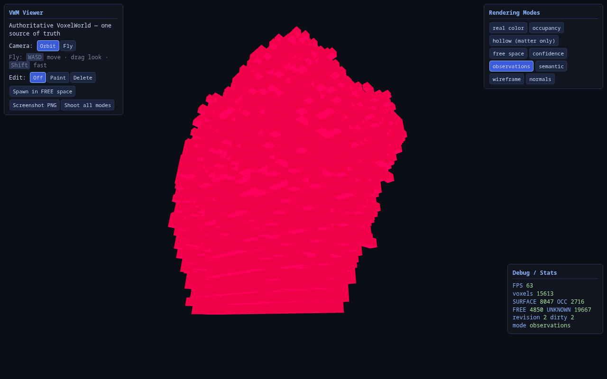
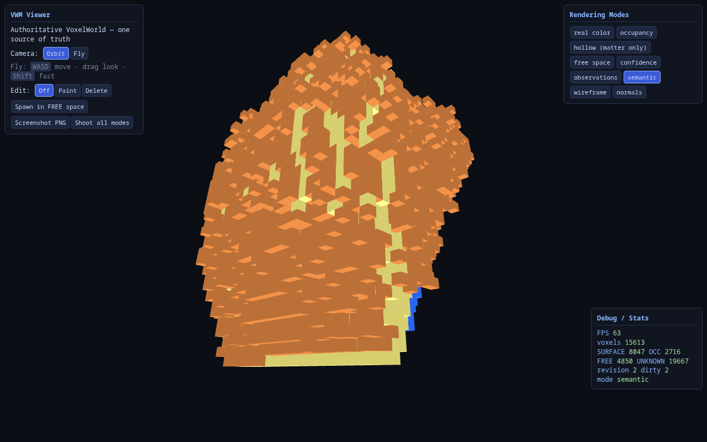
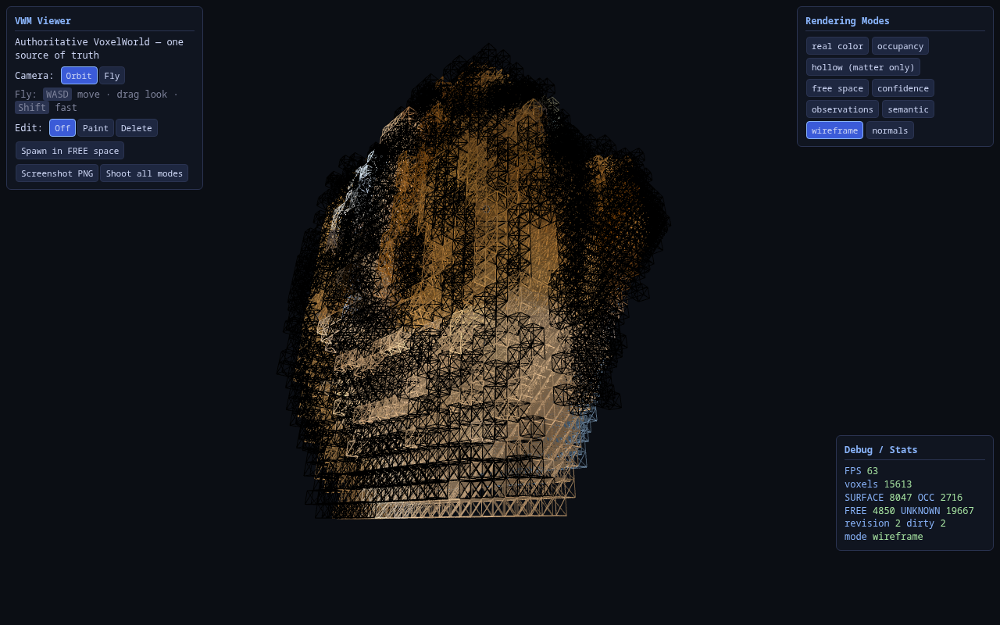
One client, one world, many views. Every image on this page came from the same viewer with the same contract: the browser owns no world state, every mode is an instant instance recolour of the authoritative voxels, and camera movement triggers zero regeneration.